Aayush S.
AI & Full-Stack Engineer
Before TayanaFinal-year CS student
Agents without code. Four project-first weeks with visual builders, templates and automated workflows — made for operators, analysts and founders. You leave with a production agent your team runs weekly, documented and handed over.
Our No-Code Agent Engineers are trained to design, build and automate intelligent solutions that streamline operations, save time and drive measurable business impact — without writing traditional code.
Skills our engineers bring
Technologies & tools

Flowise Langflow Airtable Notion AIEngineers are hands-on with these platforms and can integrate them to build end-to-end solutions.
What you'll ship
The curriculum
Every week ends with something shipped and reviewed. There is a mid-cohort capstone before demo day, so nothing reaches the final week untested.
You start with the work, not the tool. Map a process your team runs every week, then score where AI actually pays.
You ship: A mapped process and a scored shortlist, with one use case chosen alongside your mentor.
Connect the tools your team already runs and put a real automation into production.
You ship: One automated workflow running on a schedule, against live data.
Your working agent goes in front of a mentor who ships automation for a living.
You ship: A reviewed agent and a plan to harden it.
Move from linear automations to agents that branch, recover and know when to ask a human.
You ship: A multi-step agent handling a real business intent, with a human checkpoint.
Make it something your team can run without you in the room. Then present it.
You ship: A production agent, a handover pack and a demo-day presentation.
Live cohort · 24 seats · reviewed weekly by working operators.
| Phase | W1 | W2 | W3 | W4 |
|---|---|---|---|---|
| Use cases, mapped and scored | ||||
| Your first workflow, live | ||||
| Mid-cohort review | ||||
| Agents that decide | ||||
| Harden, document, hand over | ||||
What learners say
What our engineers deliver
For employers
Related Builders tracks